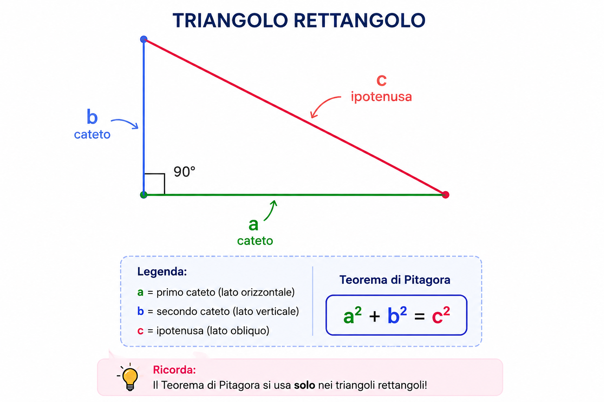

← Torna a Geometria
📐 GEOMETRIA
TEOREMA DI PITAGORA
Impara quando si usa il Teorema di Pitagora e come risolvere gli esercizi passo dopo passo.
📖 Riassunto
Il Teorema di Pitagora si applica
solo ai triangoli rettangoli,
cioè ai triangoli che hanno un angolo di 90°.
Il lato più lungo si chiama ipotenusa,
mentre gli altri due lati si chiamano cateti.
Il teorema afferma che il quadrato costruito
sull'ipotenusa è uguale alla somma dei quadrati
costruiti sui due cateti.
📐 Formule
La formula fondamentale è:
a² + b² = c²

- a = primo cateto
- b = secondo cateto
- c = ipotenusa
Trovare l'ipotenusa
c = √(a² + b²)
Trovare il primo cateto
a = √(c² − b²)
Trovare il secondo cateto
b = √(c² − a²)
⭐ Quando usare il Teorema di Pitagora
- ✅ Si usa solo nei triangoli rettangoli.
- ✅ Bisogna conoscere almeno due lati.
- ✅ L'ipotenusa è sempre il lato più lungo.
- ❌ Non si usa nei triangoli che non hanno un angolo retto.